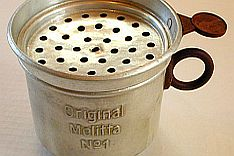
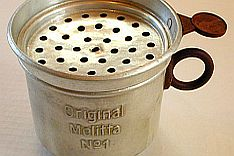
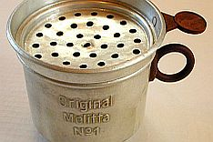
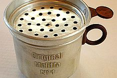

~Melitta Bentz
 


Celebrating Female Inventors Who Have Contributed to the World in a Positive Way
Sarah E. Goode who was born in 1850, invented the fold-it-bed and became on of the first African American female inventor and entrepreneur. Sarah, along with her husband who was a carpenter, opened their own funiture store in Chicago. Most of their customers did not have much space for furniture, including beds.
In 1885, Goode invented the cabinet bed which, at the time, was known as the "folding bed". It is now known as the "Murphy Bed". When not in use, the bed could be used as a roll-top desk and even had compartments for stationery and to store supplies.
The fold-it-bed
A Murphy Bed
Amalie Auguste Melitta Bentz was born in 1873 in Dresdan, Germany. Her grandfather owned a brewery and her father was a bookseller. She was an entrepreneur who invented filter paper for a coffee system.
Melitta's invention of the filter paper came from the frustration and annoyance that Melitta had from having to keep on wringing out cloth filters and cleaning the left over coffee grains off the bottom and sides of unfiltered coffee pots. The coffee grains that were poured into her cup of coffee due to no filtration system being used irritatated her as well. Melitta had many failed attempts of solving her problem, until she came up with this simple yet effective way to help her solve this problem. In 1908, she created a filtration system by laying a piece of blotting paper from her son's notebook. She stuck the blotting paper into a tin pot that she had made a few holes in. She put ground coffee in and added hot water over it. The coffee dripped through the paper and went straight through the cup.
The cleaning up after making a cup of coffee using the filtration system was much easier and more hygenic. The used paper filter was paper filter was disposed of and there was no mess created. Melitta tested her invention by hosting what she called "coffee afternoons".
Melitta and her family started producing coffee filters at home and her sons would deliver them with a handcart, while her husband set up a display to show the public how Melitta's invention works.
Their business took off in 1909 when they showed their product at the Liebzig Trade Fair and it attracted the attention of many.
In 1929, the company outgrew the size of the factory so they moved to their new loaction in Minden in Northwest Germany. The factory is stil being used today. Melitta and her husband retired in 1932 and allowed their sons to take over the business. Melitta passed away just 4 years after her husband on June 29 1950 at the age of 77.

Melitta original filter paper selling boxes
Modern day Filter Paper